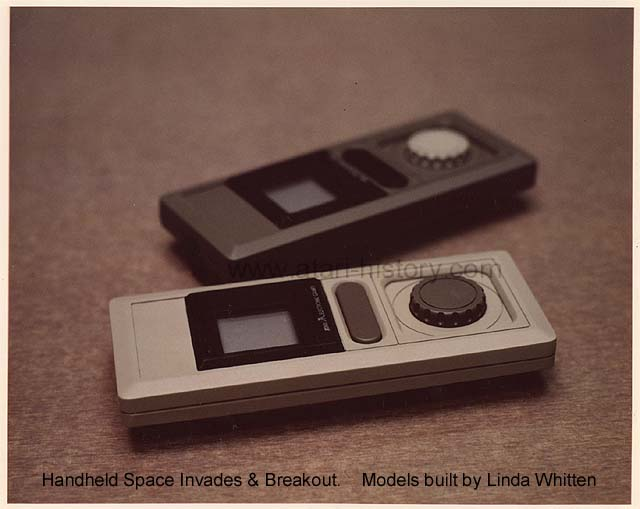
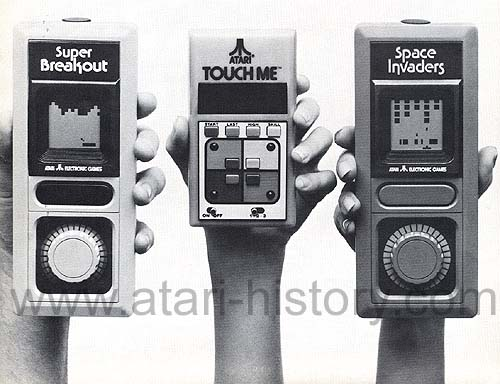

| The Atari Space Invaders
and Breakout Handhelds  Atari started and quickly stopped its new division: Atari Electronics Games. Among the products were the Atari Touch Me handheld which was released in 1978 and coming in 1980 there would be two new handhelds based on the Atari licensed Space Invaders and Atari's own Breakout. These new games would be managed through Atari's new offices in the Toy Building at 200 Fifth Ave in New York City. However sluggish sales in the handheld market did not look favorable to Atari's management and the plug was pulled on Atari's new Electronics Games Division and with it the new handhelds. 
|